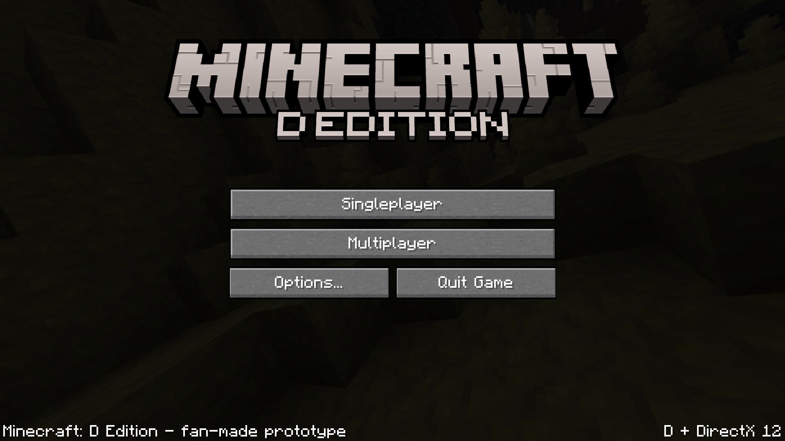

Built for performance
DirectX 12 on Windows and Vulkan through MoltenVK on Apple silicon.

Explore, build, survive, and play across Windows and macOS with native rendering and cross-platform multiplayer.
Discover D Edition
The same gameplay rules, worlds, assets, and network protocol are shared across platforms while every build keeps native windowing, input, audio, and graphics integration.
DirectX 12 on Windows and Vulkan through MoltenVK on Apple silicon.
Windows and macOS players share the same authoritative server and multiplayer protocol.
Follow the D source, renderer architecture, platform work, and public issue tracker.
Choose your platform
Installers update changed game files while preserving player-owned worlds and settings.
Native installer with automatic, file-aware updates.
Download for WindowsNative application distributed as a DMG with signed update support.
Download for macOSPlayer identity
The MCDE account layer uses a hosted sign-in flow instead of collecting passwords on this website. Your account is now the home for your public username and player skin, and is designed to connect to the Windows and macOS clients later.
Account services online
Create an account, choose a unique username, and upload a modern 64×64 Minecraft skin. Authentication and password recovery are handled securely by Auth0.
Create account or sign in